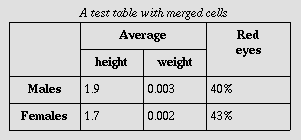
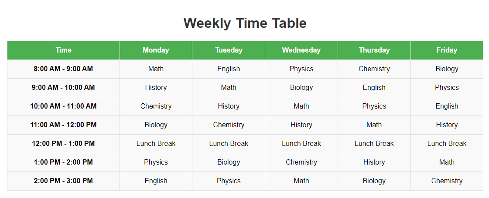

HTML (HyperText Markup Language) is the standard language used to create and structure content on the web. It utilizes a system of tags, enclosed in angle brackets, to define elements such as text, images, links, forms, and multimedia. HTML provides the foundation for web pages by establishing the structure and layout of a document, often combined with CSS (Cascading Style Sheets) for styling and JavaScript for interactivity. Elements in HTML can have attributes that provide additional information, such as links or media sources. HTML documents are divided into two main parts: the head, which contains meta-information, and the body, which holds the visible content. As the core language of the web, HTML has evolved with HTML5, introducing new elements and improved features for modern websites, such as semantic tags for better accessibility and SEO. Understanding HTML is essential for web development, forming the basis for creating functional and visually appealing websites and applications.
An HTML document is structured using the following elements:
<!DOCTYPE>: Specifies the HTML version<html>: Root element of an HTML page<head>: Contains meta-information about the document<title>: Sets the title of the document<body>: Contains the visible content of the document<header>: Represents the introductory content of a page or section<nav>: Represents a section with navigation links<main>: Represents the main content of a document<footer>: Represents the footer of a document or sectionHTML consists of various tags and elements that define the structure and content of a web page. Some commonly used tags include:
<h1> to <h6>: Headings of different levels<p>: Paragraph<a>: Anchor link<img>: Image<ul> and <li>: Unordered list and list items<ol> and <li>: Ordered list and list items<table>: Table<form>: Form for user input<div>
A table is a powerful way to organize and display data in a structured format using rows and columns. It is often used in databases, spreadsheets, and web development to present information in a clear, readable manner. Each row represents a single record or item, and each column represents a specific attribute or property of that record. For example, in a table of students, each row might represent a student, while columns could include their name, age, grade, and other details. Tables help simplify complex data by breaking it down into smaller, manageable sections. This makes it easier to analyze, compare, and interpret data.
A table is a structured format used to organize and display data in a grid made up of rows and columns. Each row represents a set of related data, while each column holds specific data points corresponding to that row. Within a table, individual data points are placed in cells, and the table often includes a header row that defines what each column represents. This header row provides context, making the table easier to read and understand.
HTML tables are designed to be easily interpreted and accessible to screen readers, which are essential tools for visually impaired users. Properly structured tables, with clear header rows and data cells, enable screen readers to accurately describe the table's content. For example, by identifying headers and associating them with the appropriate data, screen readers can help users understand the relationship between different pieces of information. This accessibility feature ensures that tables are inclusive, providing an equal experience for all users, regardless of their visual abilities.
In addition to their accessibility features, tables can be enhanced for better readability. For instance, tables can include alternating row colors or borders to make it easier for users to distinguish between different rows and columns. By organizing data in a table, large and complex datasets become more manageable and comprehensible, improving the overall user experience. Whether for financial reports, product inventories, or scientific data, tables serve as an effective way to present information in a structured, accessible, and easy-to-navigate format.
Tables can be styled using CSS to significantly enhance their appearance, making them more visually appealing and easier to read. By applying CSS (Cascading Style Sheets), developers can control various aspects of a table’s presentation, improving both its design and functionality. The customization options are extensive, allowing developers to modify individual elements such as the table itself, the rows, the cells, and the headers.
For example, the table's overall layout can be modified by adjusting properties like border, width, and padding. Adding borders to the table or cells can help define the structure of the table, making the data more visually distinct. The border-collapse property allows the borders of the table and its cells to either merge or remain separate, providing further control over the design. The width of the table can be adjusted to fit the content, and padding can be added to cells to improve the spacing around the text, making the table more readable.
CSS provides flexibility for responsive tables, which are essential for mobile-friendly web design. Media queries allow tables to adapt to different screen sizes, ensuring that they look good on both desktops and mobile devices. On smaller screens, tables can be made scrollable, or the layout can be adjusted to display data more effectively, ensuring that users have a seamless experience across devices.
For more advanced styling options, you can refer to the live example on GitHub.
HTML tables should be used for tabular data and not for layout purposes. CSS layout techniques are preferred for creating page layouts.
Using tables for layout can reduce accessibility and result in complex markup. Tables are not automatically responsive, requiring additional measures for proper display on different devices. Using HTML tables for layout purposes is discouraged because they are intended for displaying tabular data, not for structuring page designs. Misusing tables for layout can lead to accessibility issues, as screen readers may misinterpret the page structure, making navigation difficult for users with visual impairments. Tables also result in complex, deeply nested markup, which is hard to maintain and style. Moreover, they are not responsive, often causing layout issues on different screen sizes. In contrast, modern CSS layout techniques like Flexbox and Grid provide more flexible, accessible, and responsive solutions, allowing for cleaner, maintainable code that adapts well to various devices and screen sizes.
blank-template.html and minimal-table.css files.<table> tags.<td> elements.<tr> elements to form rows.Practice these concepts to enhance your Web technology programming skills!